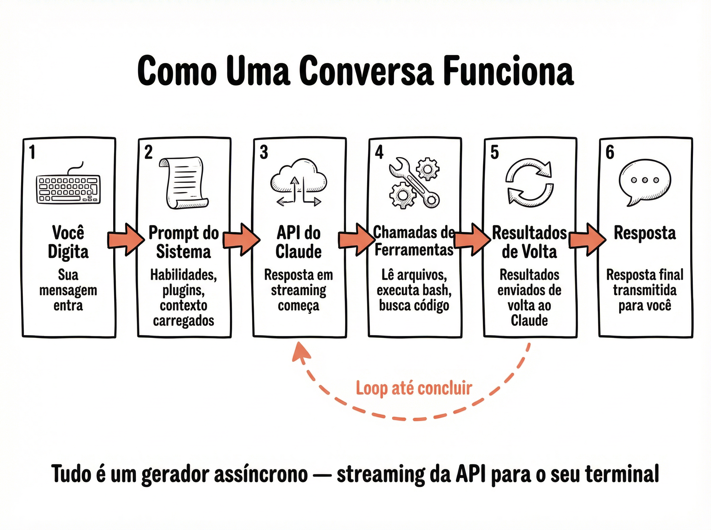

🔄 O Motor de Consulta
No coração do Claude Code existe um componente chamado Query Engine (Motor de Consulta). Ele é o maestro que orquestra tudo o que acontece entre você digitar uma mensagem e receber a resposta. Cada conversa que você inicia cria uma instância própria do Query Engine, isolada e independente, com seu próprio estado, histórico e conjunto de ferramentas.
O Que é o Query Engine
Uma instância por conversa — cada sessão cria seu próprio motor, garantindo isolamento total entre conversas
Geradores assíncronos — usa async generators do JavaScript para produzir respostas em streaming, token por token
Gerencia estado completo — histórico de mensagens, ferramentas disponíveis, system prompt, permissões e configurações
Loop autônomo — uma vez iniciado, ele roda em loop até que o modelo decida que a tarefa está completa
💡 Por Que Isso Importa
Entender o Query Engine explica por que cada conversa é independente: se você abrir dois terminais com Claude Code, cada um terá sua própria instância com seu próprio histórico. Também explica por que o Claude pode executar múltiplas ferramentas em sequência sem que você precise intervir — o loop cuida de tudo automaticamente.
📝 As 6 Etapas — Do Enter à Resposta
Quando você pressiona Enter após digitar uma mensagem, uma sequência precisa de seis etapas é acionada. Esse fluxo acontece em questão de segundos, mas envolve montagem de contexto, chamadas de API, execução de ferramentas e streaming de resultados.

As 6 Etapas em Detalhe
Você Digita
Sua mensagem é capturada pela interface React/Ink no terminal. O texto é empacotado como uma mensagem do tipo "user" e adicionado ao histórico da conversa.
System Prompt é Montado
O sistema monta o system prompt dinamicamente: instruções base + conteúdo do CLAUDE.md + ferramentas disponíveis + permissões + contexto do projeto. Tudo é injetado antes da sua mensagem.
Chamada à API
O Query Engine envia o payload completo (system prompt + histórico + mensagem) para a API do Claude via streaming. A resposta começa a chegar token por token em tempo real.
Ferramentas Executam
Se o modelo decide usar ferramentas (ler arquivo, executar comando, buscar código), o Streaming Tool Executor as executa. A segurança valida cada chamada antes da execução.
Resultados Voltam ao Loop
Os resultados das ferramentas são adicionados ao histórico como mensagens "tool_result" e o loop volta à etapa 3 — uma nova chamada à API com o contexto atualizado. O modelo pode pedir mais ferramentas ou decidir responder.
Resposta Final
Quando o modelo não solicita mais ferramentas, a resposta final é renderizada no terminal via streaming. O loop encerra e o sistema aguarda sua próxima mensagem.
💡 O Loop das Etapas 3-5
As etapas 3, 4 e 5 formam um loop que pode se repetir muitas vezes. Quando você pede algo complexo como "refatore este módulo e rode os testes", o Claude pode executar dezenas de ciclos: ler arquivos, editar código, rodar testes, ler resultados, corrigir erros — tudo automaticamente dentro do mesmo loop. É por isso que o Claude Code consegue realizar tarefas complexas sem que você precise intervir a cada passo.
♾️ O Loop Infinito — while(true) no Coração
No nível mais fundamental, o Query Engine é um while(true) — um loop infinito que só para quando o modelo decide que terminou. Essa é a essência de um agente de IA: ele não espera instruções passo a passo, ele age autonomamente até completar a tarefa.

Anatomia do Loop
Início: O loop começa quando você envia uma mensagem. O Query Engine adiciona sua mensagem ao histórico e inicia a iteração.
Chamada API: Em cada iteração, o histórico completo é enviado para a API do Claude. A resposta chega em streaming.
Decisão: Se a resposta contém tool_use (pedido de ferramenta), o loop executa a ferramenta e continua. Se não contém, o loop encerra.
Proteções: Limites de iterações, timeout e verificação de tokens previnem loops verdadeiramente infinitos. Se o contexto estourar, a compressão automática entra em ação.
Fazer
- ✓ Dar tarefas completas e deixar o loop trabalhar
- ✓ Confiar no ciclo automático de ferramentas
- ✓ Usar /compact quando o contexto crescer demais
- ✓ Monitorar o uso de tokens para otimizar custos
Evitar
- ✗ Interromper o loop desnecessariamente com Ctrl+C
- ✗ Pedir tarefas passo a passo quando uma instrução completa bastaria
- ✗ Ignorar sinais de contexto estourando
- ✗ Acumular conversas enormes sem compactar
🌊 Streaming Tool Executor — Execução Inteligente de Ferramentas
Quando o modelo pede para executar ferramentas, o Streaming Tool Executor entra em ação. Ele não simplesmente executa uma ferramenta por vez — ele classifica cada ferramenta em duas categorias e decide a estratégia de execução com base no tipo de operação.
Dois Modos de Execução
Paralelo (Read-Only): Ferramentas que apenas leem dados — como Read, Glob, Grep, ListFiles — podem rodar simultaneamente. Se o modelo pede para ler 5 arquivos ao mesmo tempo, todas as leituras acontecem em paralelo, acelerando drasticamente a execução.
Exclusivo (Modificações): Ferramentas que modificam o sistema — como Edit, Write, Bash — rodam uma por vez, em sequência. Isso evita conflitos: você não quer duas edições simultâneas no mesmo arquivo.
Classificação automática: Cada ferramenta declara se é read-only ou não. O executor usa essa informação para decidir o modo automaticamente, sem intervenção do usuário.
📊 Impacto na Performance
Leituras paralelas: Quando o Claude precisa ler 10 arquivos para entender um módulo, todas as leituras acontecem ao mesmo tempo em vez de uma por vez — reduzindo o tempo de espera significativamente
Streaming durante execução: Enquanto ferramentas rodam, a saída parcial já é mostrada no terminal — você vê o progresso em tempo real
Segurança integrada: Antes de cada execução, o sistema de permissões valida se a ferramenta tem autorização — isso acontece de forma transparente e rápida
Timeout por ferramenta: Cada ferramenta tem seu próprio timeout para evitar travamentos — comandos bash têm limite configurável
🔀 Fallback de Modelo — Troca Automática e Transparente
O que acontece quando a API do Claude retorna erro? O sistema não simplesmente falha — ele tem um mecanismo sofisticado de fallback que troca de modelo automaticamente, de forma totalmente transparente para o usuário. É aqui que entram os misteriosos modelos Capybara.
Como Funciona o Fallback
Detecção automática: Quando a API retorna erro 429 (rate limit), 500 (erro interno) ou timeout, o sistema detecta e inicia o fallback
Cadeia de modelos: Existe uma lista priorizada de modelos alternativos. Se o principal falha, o próximo da fila assume
Transparência: A troca acontece sem interrupção visível. O usuário pode nem perceber que o modelo mudou — a conversa continua normalmente
Modelos Capybara: São codinomes internos da Anthropic para variantes de modelos otimizados para o Claude Code. Nomes como "capybara" aparecem no código-fonte como identificadores desses modelos de fallback
⚠️ Sobre os Modelos Capybara
Os modelos Capybara são variantes internas e não estão documentados publicamente pela Anthropic. Eles podem ter capacidades ligeiramente diferentes do modelo principal:
Podem ter janela de contexto diferente do modelo principal
Performance pode variar em tarefas específicas de codificação
Se você notar mudança de qualidade durante uma sessão, pode ser que um fallback tenha sido ativado
O flag --model permite forçar um modelo específico, evitando fallbacks
📡 Geradores Assíncronos — Streaming em Tempo Real
A experiência fluida de ver a resposta do Claude aparecendo token por token no terminal não é magia — é uma implementação sofisticada baseada em async generators do JavaScript. Esse padrão permite que dados fluam continuamente do servidor para a tela sem precisar esperar a resposta completa.
Como Funciona o Streaming
Async Generators (async function*): O Query Engine usa geradores assíncronos que produzem (yield) eventos conforme chegam da API — cada token, cada resultado de ferramenta, cada mudança de estado
Fluxo contínuo: Em vez de esperar a resposta inteira para só depois exibir, cada pedaço é renderizado imediatamente. Isso cria a experiência de "digitação em tempo real"
Eventos tipados: O sistema emite diferentes tipos de eventos: texto, início de ferramenta, resultado de ferramenta, erro, fim de turno. Cada consumidor pode reagir ao tipo de evento que lhe interessa
Cancelamento gracioso: Como geradores são lazy (avaliados sob demanda), cancelar uma operação (Escape/Ctrl+C) é tão simples quanto parar de consumir o gerador
💡 Por Que Geradores e Não Callbacks
Geradores assíncronos são superiores a callbacks ou eventos tradicionais para esse caso porque permitem composição: você pode encadear transformações (filtrar, mapear, acumular) no fluxo de dados sem perder a natureza streaming. O Claude Code usa isso extensivamente — por exemplo, o fluxo de tokens passa por formatação Markdown, syntax highlighting e layout antes de chegar ao terminal.
📊 Arquitetura do Streaming
Camada de rede: A API do Claude envia Server-Sent Events (SSE) que são consumidos pelo SDK da Anthropic como um async iterable
Camada de lógica: O Query Engine transforma os eventos da API em eventos de domínio (texto, ferramenta, erro) e os propaga via yield
Camada de apresentação: Os componentes React/Ink consomem os eventos e atualizam a interface do terminal em tempo real
Ponte (Bridge): Se conectado a um browser ou IDE, os mesmos eventos são retransmitidos via WebSocket para a interface remota
📋 Resumo do Módulo
Próximo Módulo:
1.4 - 🧰 A Caixa de Ferramentas